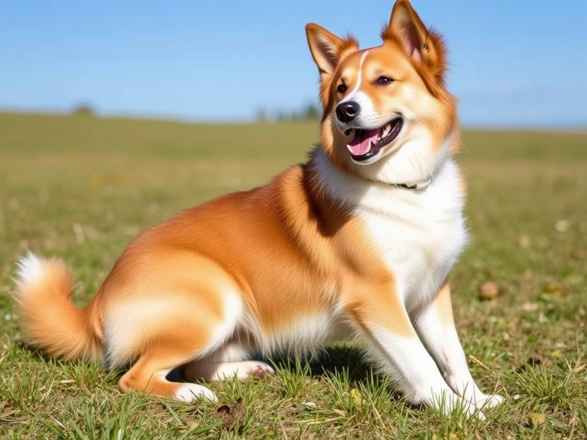

История собак
Соба́ка[2], или дома́шняя соба́ка[3][4][5][6] (лат. Canis familiaris, или лат. Canis lupus familiaris), — домашнее животное, одно из наиболее популярных (наряду с кошкой) животных-компаньонов. С зоологической точки зрения, собака — плацентарное млекопитающее отряда хищных семейства псовых. Домашняя собака была описана как самостоятельный биологический вид Canis familiaris Линнеем в 1758 году; в настоящее время данное научное название признаётся организациями, такими как Американское общество маммологов[7][8][9]. Некоторые источники (например, ITIS и MSW3) признают собаку подвидом волка (Canis lupus familiaris)[10][11]. Собаки известны своими способностями к обучению, любовью к игре, социальным поведением. Выведены специальные породы собак, предназначенные для различных целей: охоты, охраны, тяги гужевого транспорта и другого, а также декоративные породы (например, болонка, пудель). В русскоязычных письменных источниках слово «собака» в значении соответствующего животного встречается по крайней мере с 1475 года (начиная с грамоты князя Андрея Васильевича Меньшого Кириллову монастырю)[12][13]. При необходимости разграничения собак по полу употребляются термины «кобе́ль» (самец) и «су́ка» (самка); в обиходной речи — «пёс» и «собака», соответственно. Детёныши собаки называются «щенками» или «кутятами».
- Лабрадор
- Немецкая овчара
- Йоркширский терьер
- Бульдог
Интересные факты
Щенки любят играть в прятки. Спрячьтесь и позовите его по имени, чтобы он попытался вас найти. Щенки набирают до половины своего взрослого веса за первые 4 — 5 месяцев. Однако им нужен год или больше, чтобы набрать вторую половину веса. Щенки спят 18-20 часов в день во время фазы быстрого роста. У щенков 28 зубов, а у взрослых особей — 42 зуба. Наиболее подходящий возраст, чтобы взять щенка домой — в период между 6-12 месяцами. У новорожденных щенков есть сенсоры тепла на носу, которые позволяют им находить мать, когда их глаза и уши закрыты. Количество щенков в помете в среднем составляет около пяти. Щенки рождаются слепыми, глухими и без зубов. Щенки далматинцев рождаются совершенно белыми, а пятна у них появляются по мере роста Источник: https://infoniac.ru/news-Vse-o-sobakah-100-faktov-kotorye-interesno-uznat-kazhdomu-sobachniku
